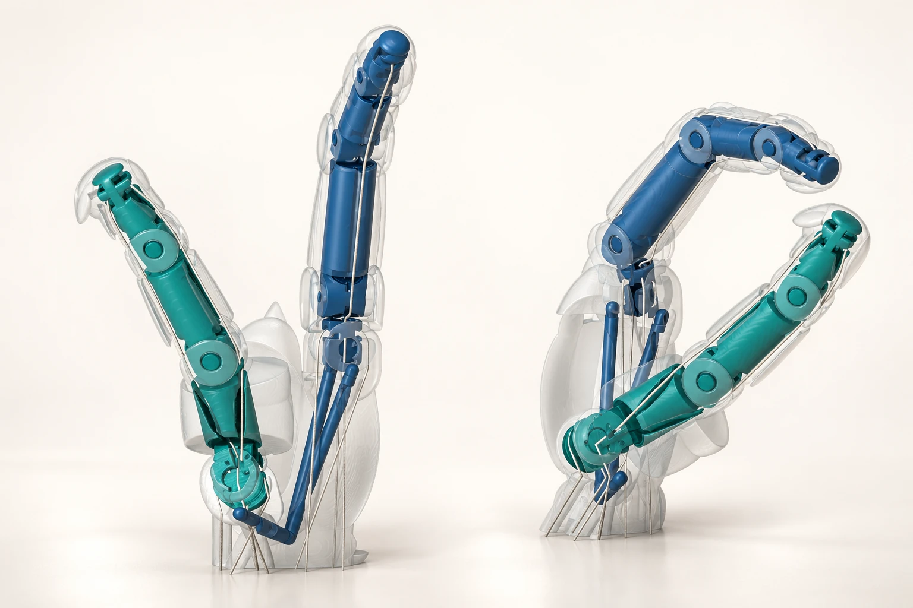
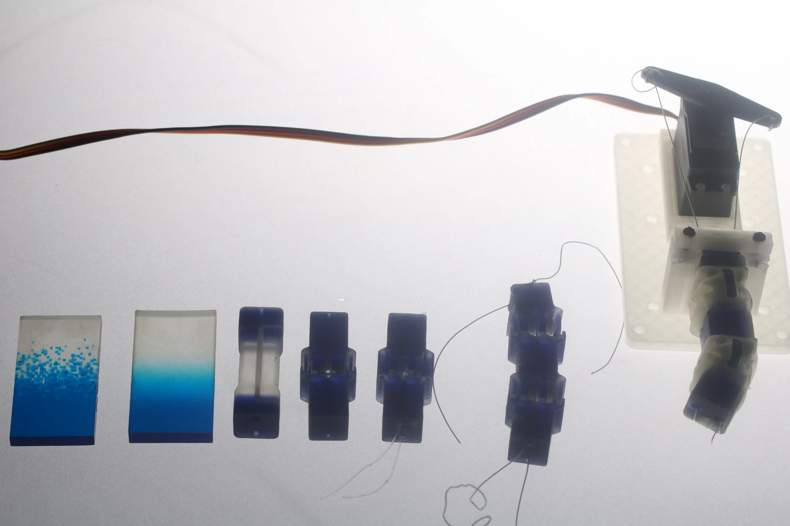
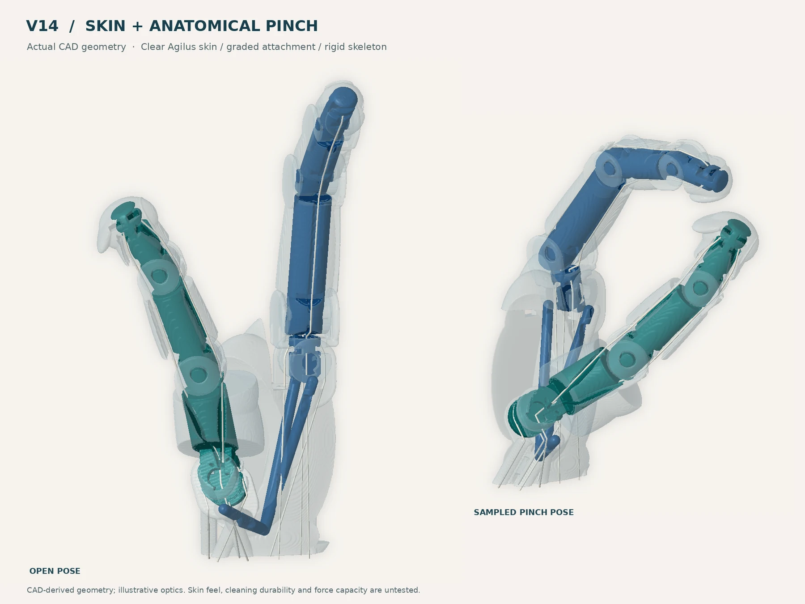
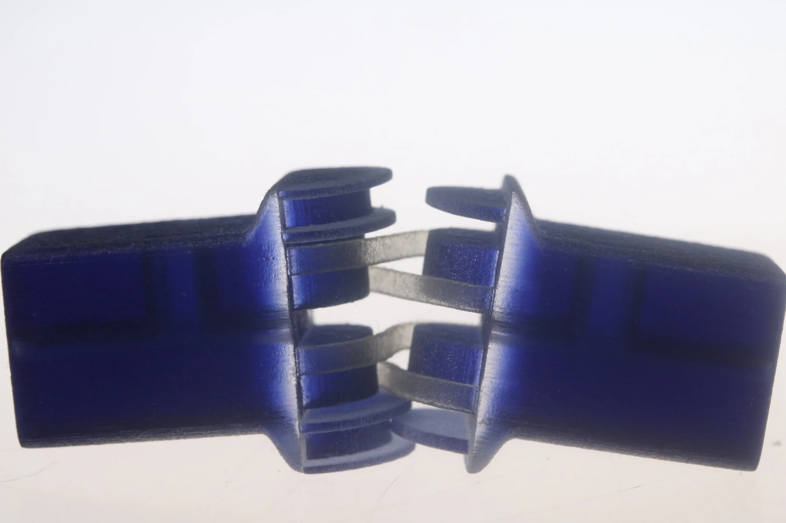
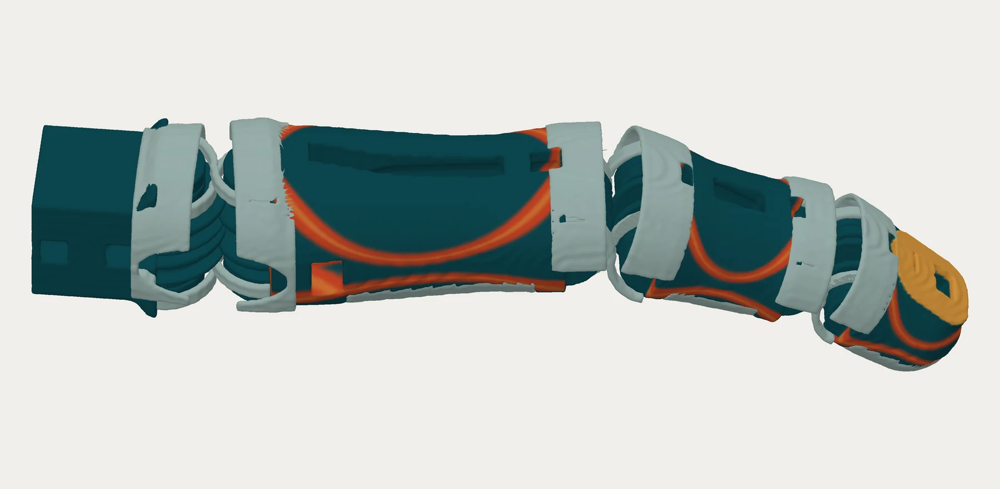
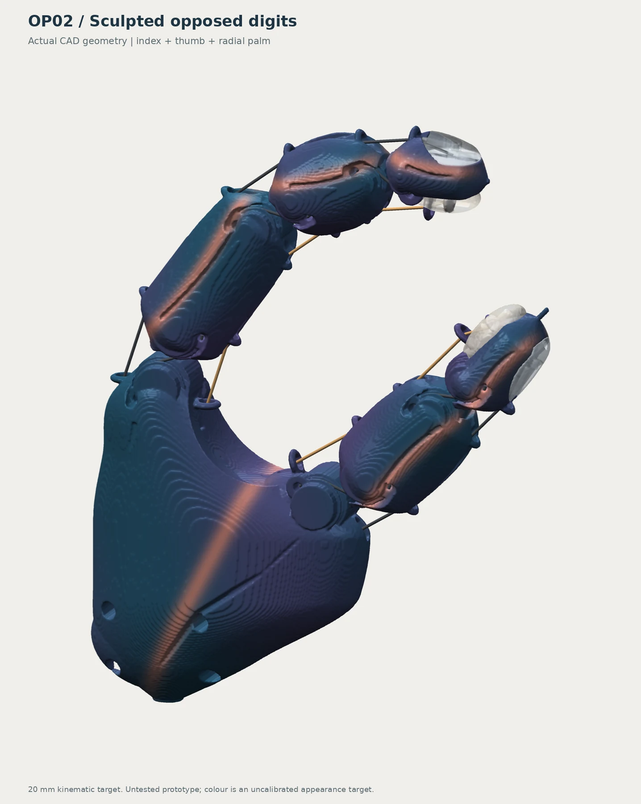
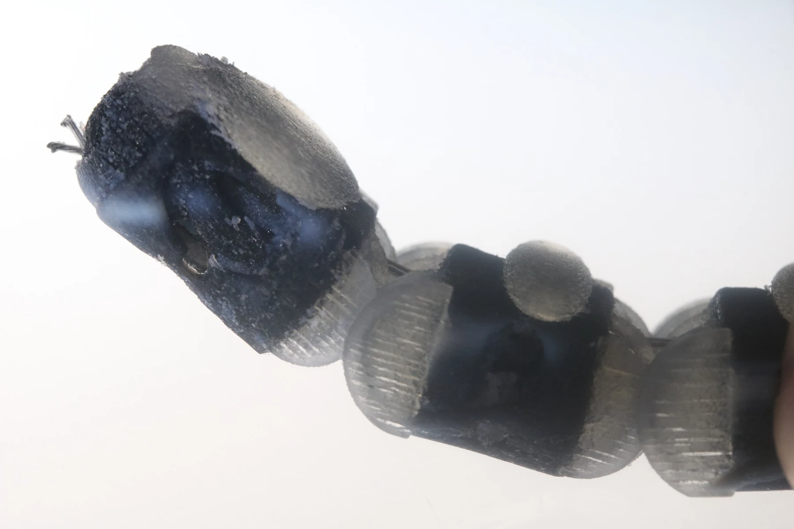

Master’s research / Wellington, NZ
Giving AI
physical form.
I’m building a more direct path from AI design to physical hardware.
A modified PolyJet workflow.
Robotic hands as the test case.

Selected experiments
Made. Tested. Reconsidered.
The prints and studies behind the current prototype. Every iteration asks a different question.












Select any image for a closer look.
The idea behind the work
A physical
partner for AI.
The hand is the test case. The design-to-print workflow is the research.
I’m developing a modified PolyJet workflow that connects AI-assisted geometry and material instructions with physical fabrication. It lets me explore the shape, internal mechanisms and distribution of hard and soft materials together.
The aim is to reduce the steps between a design change and a physical test—and eventually let the results guide more of the AI’s decisions.
What does the modified workflow enable?
It connects AI-generated design decisions to the geometry and material instructions used by the printer. A redesign can involve a different joint, a revised tendon path and a change in flexible regions within the same development process.
PolyJet already supports multimaterial printing and voxel-level material control. My work builds on those capabilities through an AI-assisted design-to-print workflow and physical testing.
I currently direct the design changes and carry out the tests. Motors and electronics remain external. A more autonomous cycle of simulation, printing, testing and redesign is the longer-term goal.
PolyJet platform background ↗Behind the work
I’m Zeke, an industrial designer from Kauaʻi, now based in Wellington. I’m completing a Master of Design Innovation at Victoria University of Wellington, supervised by Ross Stevens.
More about me on LinkedIn